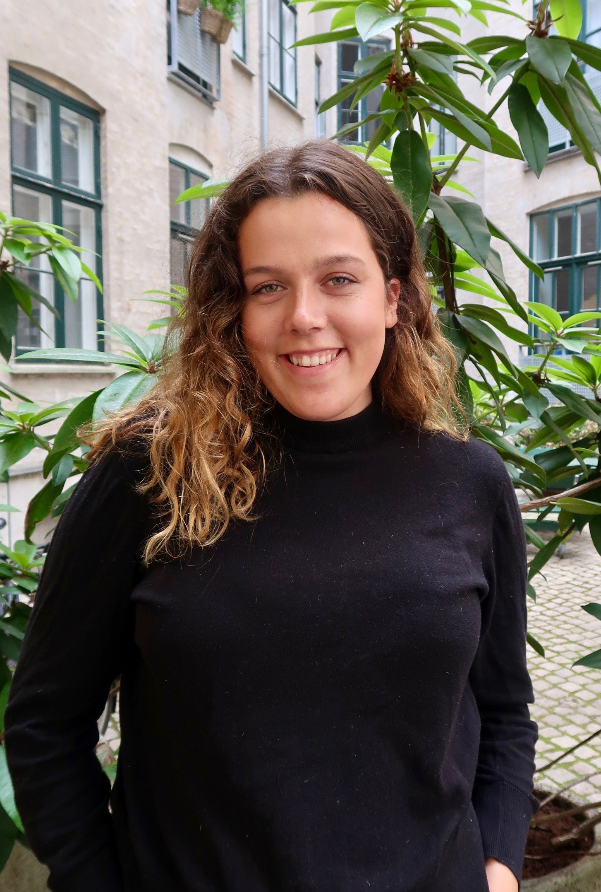

Mig:
- Alice Hüllert
- 23 år
- alice.hullert@hotmail.com
- +45 23 25 32 55
- alicehullert.com

Uddannelse:
- Grundforløbet på Film og tv produktionsteknikker, København, Danmark (2018)
- European Film College Ebeltoft, Jylland, Danmark(2016-2017)
- Ordrup Gymnasium Ordrup, Charlottenlund, Danmark. (2012-2015)

Erhverserfaring:
- SoMe manager - DragHouse (2019)
- Tranquebar rejseboghandel (2017-2019)
- Receptionist på Greenland Institute of Natural Resources (2016)
Film arbejde:
- Fucking Venner (Kortfilm) - klipper & kamera (2018)
- Bare Thomas (Dokumentar) - klipper & kamera (2018)
- Ilden Inde I Mig (Kortfilm) - Producer (2017)
Kan ses her
Sprog: